| TORRE DE PISA |
| Encuadrada dentro del conjunto arquitectónico de la célebre Piazza dei Miracoli, declarada Patrimonio de la Humanidad por la UNESCO en 1987, la Torre de Pisa es uno de los monumentos más importantes y visitados de Europa. |
PALACIO DE VERSALLES |
| Localizado en el municipio de Versalles (Francia), es uno de los palacios más bellos del mundo. Su construcción fue ordenada por Luis XIV, que hizo edificar un imponente y majestuosos edificio y unos bellos y cuidados jardines de más de 800 hectáreas, los cuales se encuentran entre los jardines más bellos del planeta. Sus estancias poseen una gran riqueza artística, especial importancia tiene la llamada «Galería de los Espejos», una impresionante galería de 73 metros de longitud que posee 375 espejos y que fue el lugar en el que en 1919 se pondría fin a la Primera Guerra Mundial con la firma del tratado de Versalles. Este magnífico palacio además está declarado Patrimonio de la Humanidad. |
CASTILLO NEUSCHWANSTEIN |
| El castillo medieval Neuschwanstein tiene el honor de ocupar la primera posición en el ranking de los castillos más impresionantes del mundo, además de ser uno de los monumentos más importantes de Europa. Se alza sobre un desfiladero en los Alpes Bávaros localizado cerca de Füssen, en el estado federal de Baviera (Alemania). Su construcción fue ordenada por Luis II de Baviera «el rey loco» en 1866. Es el edificio más fotografiado de Alemania y uno de los más visitados del país. En este espectacular monumento se inspiró Walt Disney para crear el famoso castillo de la Cenicienta. |
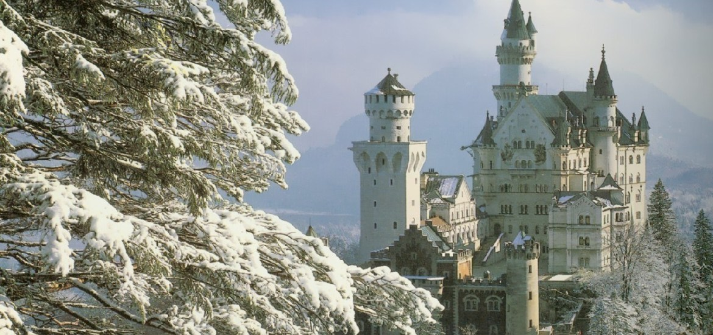 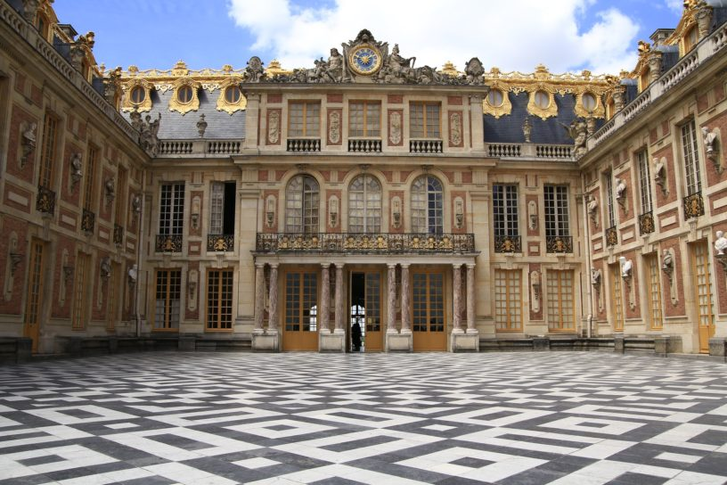 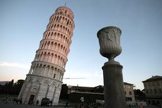 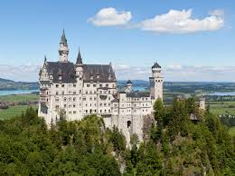 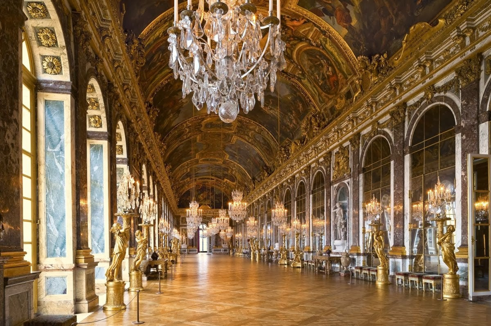
SAGRADA FAMILIA |
|
Situada en Barcelona, es la obra maestra de Gaudí y el máximo exponente de la arquitectura modernista catalana. Su construcción comenzó en 1882 y hoy en día aún no está finalizada. La obra que realizó Gaudí, es decir, la fachada del Nacimiento y la cripta, fue declarada en 2005 por la Unesco Patrimonio de la Humanidad. |
STONEHENGE |
| Stonehenge es un monumento megalítico, de finales del neolítico (siglo XX a. C.), situado cerca de Amesbury, en el condado de Wiltshire, Inglaterra. No se sabe si fue uno de los primeros templos musicales de la historia o un templo en el que se hacían rituales para los difuntos, pero lo que si sabemos con toda seguridad es que Stonehenge es uno de los monumentos más importantes de Europa. |
EL VATICANO |
| En este puesto incluimos no solo la impresionante Basílica de San Pedro del Vaticano, el templo religioso más importante del catolicismo además de uno de los monumentos más importantes de Europa en cuya construcción participaron arquitectos como a Bramante, Miguel Ángel o Carlo Maderno, sino también el Palacio Apostólico que es la residencia oficial del Papa en la Ciudad del Vaticano y que posee los Museos Vaticanos y la Biblioteca Vaticana, incluyendo la célebre Capilla Sixtina con los frescos de Miguel Ángel. |
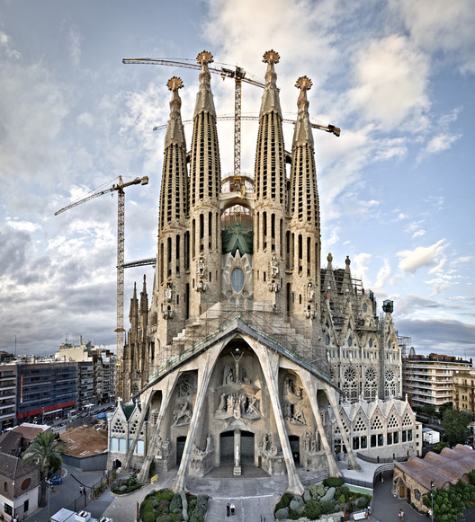 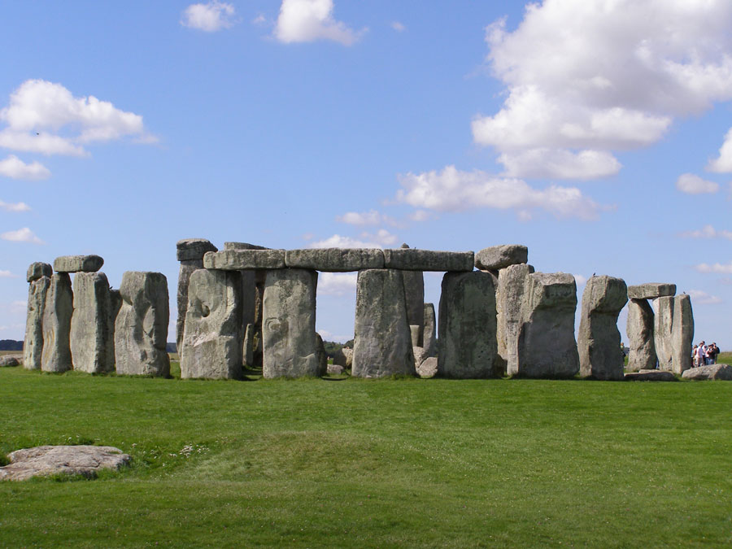 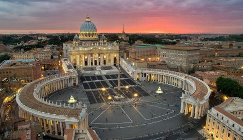 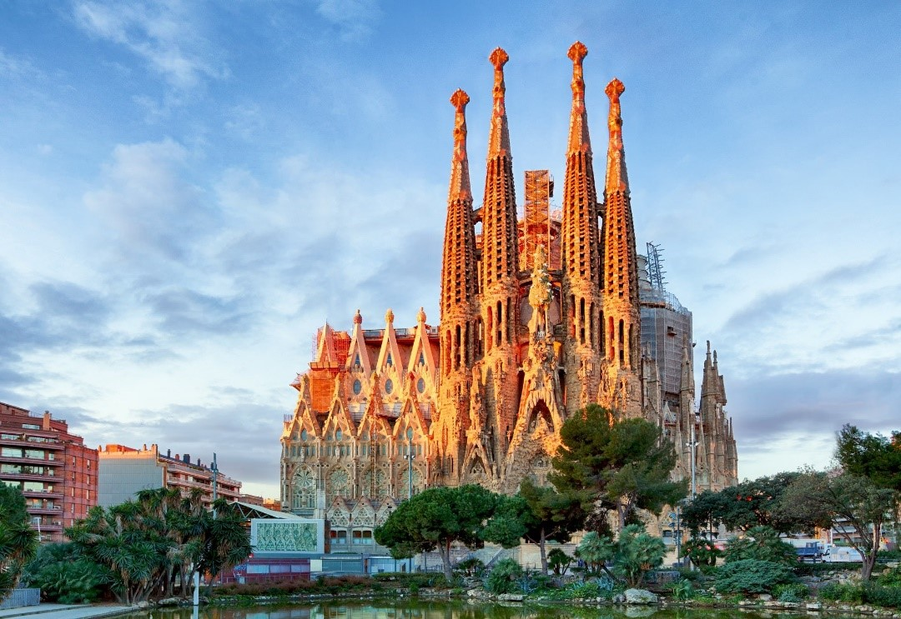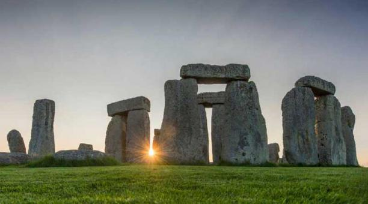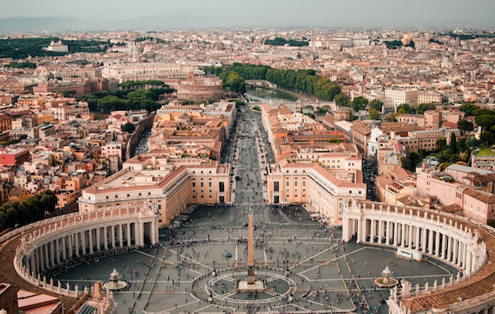